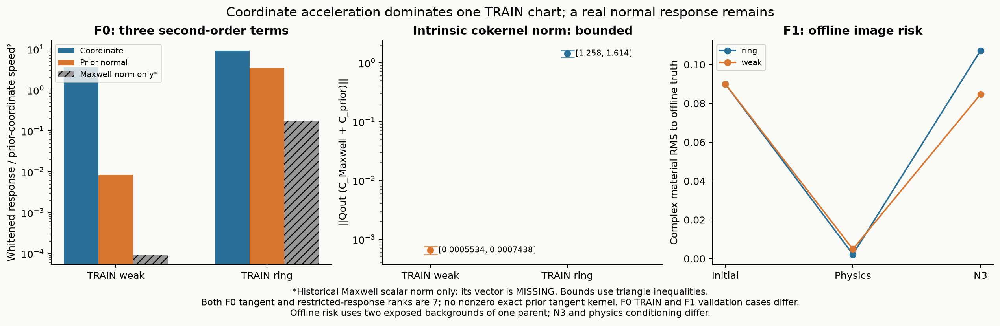

Research F · Maxwell材料几何与独立物理反演
2026-10-17 · 已执行并封账 · 原P0 / 2D scalar-TM
坐标问题已分离，有限探索仍未建立
巨大decoder二阶项中，weak例99.9967%的材料二阶能量来自坐标加速度；ring例85.2285%。真实prior曲率仍非零。完整历史Maxwell二阶向量缺失，保留MISSING。
24 / 64新full-material states960 / 2048complex RHS5.534 s受控物理wallNOT_RUNF2有限传输
独立physics-only反演取得两份合法且噪声相容的材料，但未过冻结驻点标准，停止F2，不调整门槛、不训练NN。
完整中文结论与十问 →原先验内的物理反演，真正运行了

同parent的两个已暴露背景条件。物理反演额外已知family/global geometry，不能称与N3同信息量的普遍胜出。GT只用于离线评分。
为什么不继续堆高阶网络？

真实材料曲率、坐标加速度和Maxwell反馈须分开。两例去gauge的响应均rank7，未确认非零exact local fiber；有限噪声区域仍未排除。
继续什么，停止什么
CONDITIONAL GO：合法材料商坐标、真实比例边界和有界物理驻点。NO-GO：现在训练learned Explorer或声称发现新posterior modes。
逐项裁决 · 独立数学审查 · 完整费用 · 复现边界